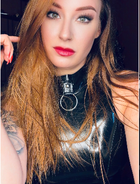

Wardrobe
Items die mijn uitstraling, shoots en presence versterken.
Tribute Wishlist
Een gift is nooit verplicht, maar wel een mooie manier om aandacht, tribute of support te laten zien. Via mijn wishlist verzamel ik items die passen bij mijn sfeer, content en setting.

Wishlist
Van luxe details tot studio-items: elk item draagt bij aan de wereld die ik om mij heen bouw. Als jij daar iets aan wilt toevoegen, kun je dat via mijn wishlist doen.
Vervang deze knop nog even met jouw persoonlijke Throne-link.
Wat past hierbij
Items die mijn uitstraling, shoots en presence versterken.
Details voor sfeer, decor, opbouw en presentatie.
Kleine of grote gestures die helemaal passen bij mijn wereld.